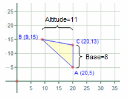

This formula allows you to calculate the area of a triangle when you know the coordinates of all three vertices. It does not matter which points are labelled A,B or C, and it will work with any triangle, including those where some or all coordinates are negative.
Looking at the formula above, you will see it is enclosed by two vertical bars like this: The two vertical bars mean "absolute value". This means that it is always positive even if the formula produced a negative result. Polygons can never have a negative area.
If you perform this calculation but omit the last step where you take the absolute value, the result can be negative. If it is negative, it means that the 2nd point (B) is to the left of the line segment AC. Here, we mean 'left' in the sense that if you were to stand on point A looking at C, then B is on your left.
If the area comes out to be zero, it means the three points are collinear. They lie in a straight line and do not form a triangle. You can drag the points above to create this condition.
Heron's Formula allows you to calculate the area of a triangle if you know the length of all three sides. (See Heron's Formula). In coordinate geometry we can find the distance between any two points if we know their coordinates, and so we can find the lengths of the three sides of the triangle, then plug them into Heron's Formula to find the area.

In the triangle above, the side AC is vertical (parallel to the y axis). In this case it is easy to use the traditional "half base times height" method. See Area of a triangle - conventional method.Here, AC is chosen as the base and has a length of 8, found by subtracting the y coordinates of A and C. Similarly the altitude is 11, found by subtracting the x-coordinates of B and A. So the area is half of 8 times 11, or 44.
You can also use the box method, which actually works for any polygon. For more on this see Area of a triangle - box method (Coordinate Geometry)
In the interest of clarity in the applet above, the coordinates are rounded off to integers and the lengths rounded to one decimal place. This can cause calculatioons to be slightly off.
For more see Teaching Notes